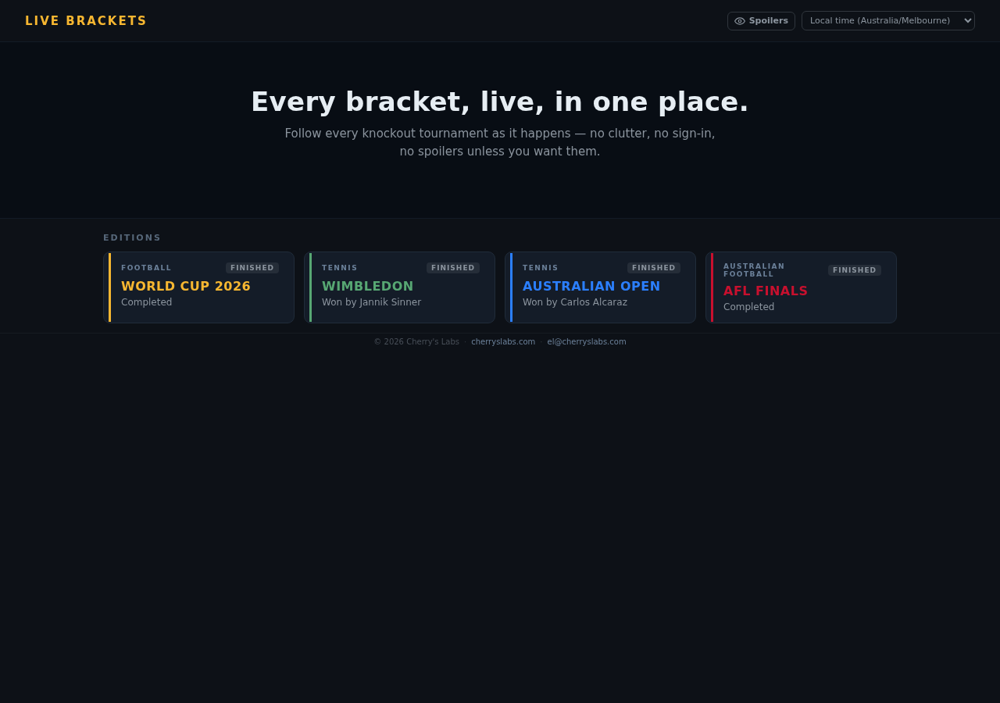

bracket
node express react vite live
A live knockout-bracket display for single-match knockout tournaments — the 2026 FIFA World Cup, Wimbledon, the Australian Open, the AFL finals. It renders the full tournament tree, auto-focuses whatever match is live, and has an optional spoiler guard.

how it works
Every tournament pulls its live results from somewhere different online, and none of those sources format their data the same way — the World Cup feed looks nothing like ESPN's tennis scores, for instance. So for each sport there's a small translator that takes whatever messy format that sport's source uses and converts it into one single, tidy shape that the rest of the site understands. That means adding a brand-new tournament is mostly just writing one new translator — the part of the site that actually draws the bracket on screen never has to change. The bracket itself, and which round is "current", is always worked out fresh from the latest results rather than being drawn by hand ahead of time.
The page automatically shows whichever is most useful: a live match in progress, or failing that a countdown to the next one, or failing that just the full bracket. One shared piece of logic is the single source of truth for "what's happening in this match right now", down to figuring out penalty shootouts and who scored.
built with
A small always-on server (built with Node and a web framework called Express) fetches the latest scores and keeps a short-lived copy in memory so the site stays fast and keeps working even if a results feed is briefly down. The part you actually see and click around in is built with React, a widely-used toolkit for building interactive web pages. Match kick-off times are converted from whichever stadium's local time zone into everyone's own time zone automatically. Visit counts are tracked with a small self-hosted, privacy-respecting analytics tool rather than a third-party tracker like Google Analytics.